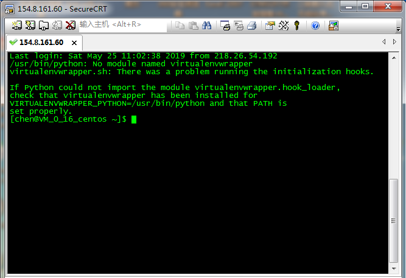

4.2 搭建开发环境
4.2 搭建开发环境
选用腾讯云、百度云、阿里云任何一家的云服务器作为开发主机，三大运营商为了资助高校人才培养，占领校园市场，都有针对校园用户的低价套餐，只需通过校园认证后，就可以购买到10元一个月学生套餐，当然服务器的配置也就是最低配置了。各个运营商之间稍有差异，具体配置大都为：单核CPU、2G运存、40G磁盘、1Mbps带宽，作为日常开发学习，也足够了。
这里我选用腾讯云的服务器作为本设计的开发平台，购买服务器的时候，系统会让选择预装的操作系统，操作系统选择通常选用自己熟悉的linux系统就可以，不同的linux系统只是操作指令稍微有些不同，性能方面相差不大，没有好坏之分。当然预装系统是可以选用windows的，但个人感觉windows环境下做后端服务器应用的开发很不方便，所以还是推荐使用linux系统来完成开发任务，在后续的开发过程中，我使用的是Centos7.5操作系统。因为购买的服务器是运营商提供的，我们接下来的开发都是通过远程链接到服务器上进行的，所以运营商会让你选择是否购买公网IP，当然学生用户会免费赠送公网IP的，这里不需要过多关注。要注意的是，运营商会推荐购买域名，这是要另外收费的。在做网站开发的时候，通常需要申请一个域名。域名要通过DNS服务器把服务器的公网IP与申请的域名做个映射，网站开发完成后在浏览器地址栏输入域名就可以访问到你的服务器。因涉及到备案，数字证书等问题，是一个比较复杂的过程，在后续章节会详细介绍网站搭建过程。
购买完成后，系统会分配一个公网IP，通过SSH的方式，可以登陆到云服务器上去。常用的SSH软件很多，SecureCRT、putty、Xshell等这里选用SecureCRT。打开SecureCRT输入云服务器公网IP，用户名和密码后，即可连接上服务器。
拿到服务器后，我们通常对服务器进行一些简单设备，比如重新设置密码，跟换镜像源、创建个用于开发的子账号等。linux系统默认的镜像服务器在国外，在国内下载软件会遭到防火墙拦截，因此需要将镜像源跟换为国内服务器地址。在实际开发中往往需要创建修改系统根目录下的文件，如果使用root用户进行，很容易因误操作造成系统崩溃，一般会创建子用户，使用子用户进行操作，子用户在操作系统文件时会请求授权，这样能避免误操作的发生。

因为后续的开发主要以Python语言为主，Centos7.5版本的linux系统是预装的Python版本是2.7版本，我使用的开发环境为Python3，所以需要安装Python3开发环境。步骤如下：
1.在“/usr/local/”路径下创建名为“Python3”的文件夹，用了存放Python3安装文件。
mkdir /usr/local/python3
2.进入刚创建的Python3文件夹中。
cd /usr/local/python3
3.通过wget命令从官网下载python3的安装包。
wget https://www.python.org/ftp/python/3.6.3/Python-3.6.3.tgz
4.解压“Python-3.6.3.tgz”安装包
tar -xvf Python-3.6.3.tgz
5.解压完成后会在当前目录下生成名为“Python-3.6.3”的文件夹，用cd命令进入文件夹中。
cd Python-3.6.3/
6.进入文件后，运行配置文件。
./configure
7.配置完成后，执行编译命令
Make
8.编译正常后，执行安装命令
Make install
到此，python3就安装完成了，后面会使用python3完成TCP、http服务器的开发。